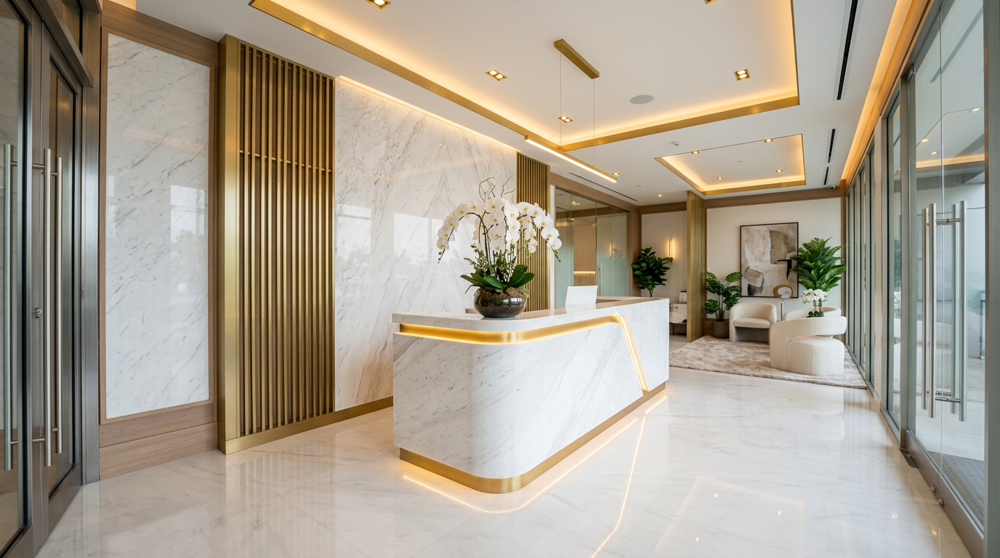
15년+
피부과 전문 진료
42,000+
누적 시술 건수
98.7%
환자 만족도
4.9★
네이버 평점
피부를 읽는 의사,
이서윤 원장
서울대학교 의과대학을 졸업하고 피부과 전문의로서 15년간 임상 경험을 쌓아왔습니다. 대한피부과학회 정회원이자 SCI 논문 12편의 저자입니다.
- 서울대학교 의과대학 졸업
- 피부과 전문의 자격 취득
- 대한피부과학회 정회원
- SCI 등재 논문 12편 저자
"모든 시술은 정확한 진단에서 시작합니다.
피부가 보내는 신호를 읽을 수 있어야 합니다."
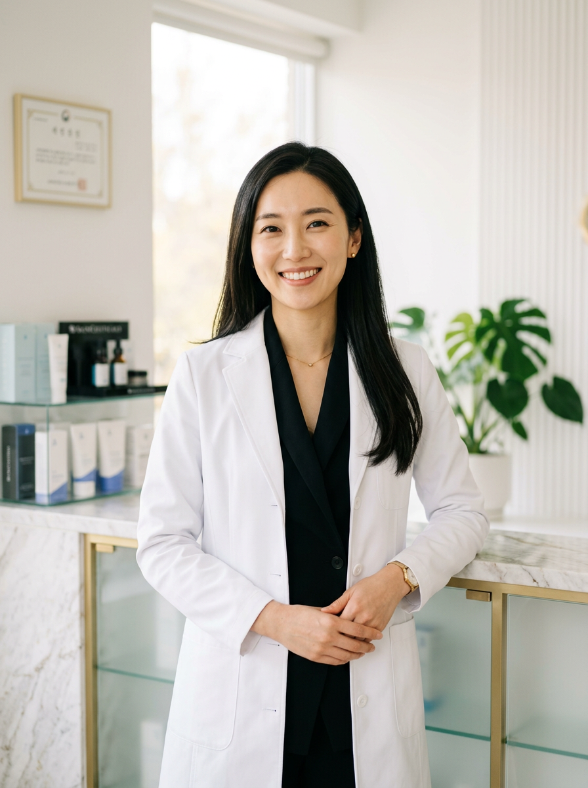
당신의 피부를 위한
과학적 접근
루메르의 모든 시술은 AI 피부 분석과 전문의 판독을 병행합니다. 데이터에 기반한 정밀 진단이 최상의 결과를 만듭니다.
맞춤 시술 프로그램
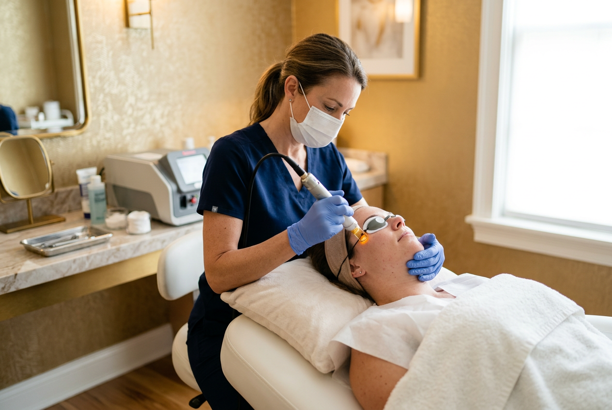
레이저 & 톤 관리
색소 침착, 모공, 피부결 개선을 위한 맞춤형 레이저 프로그램입니다.
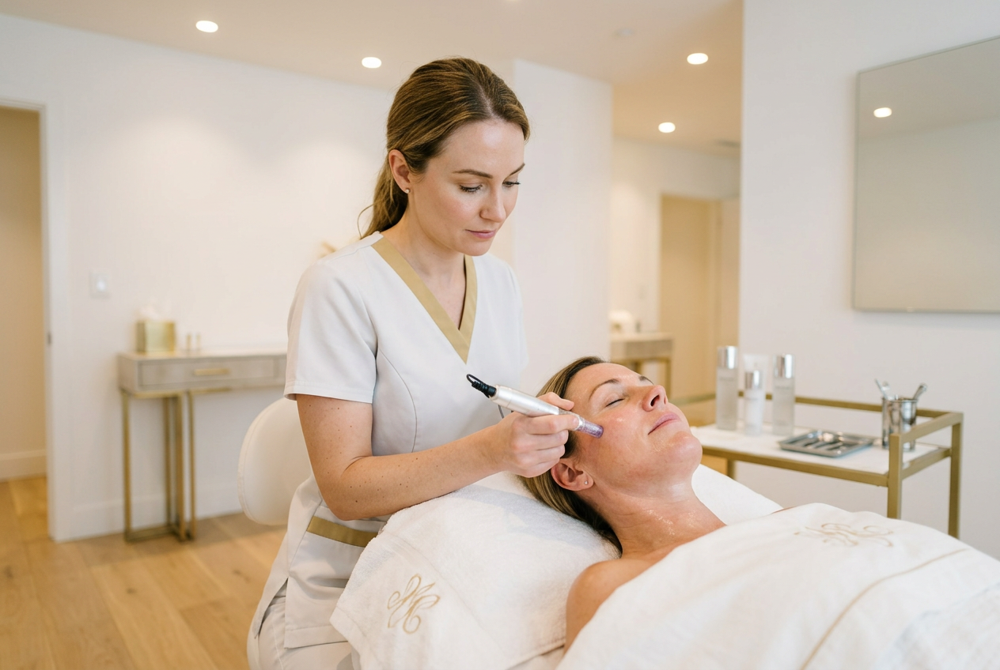
안티에이징 & 리프팅
주름 개선과 탄력 회복을 위한 고주파, 초음파 기반 리프팅 프로그램입니다.
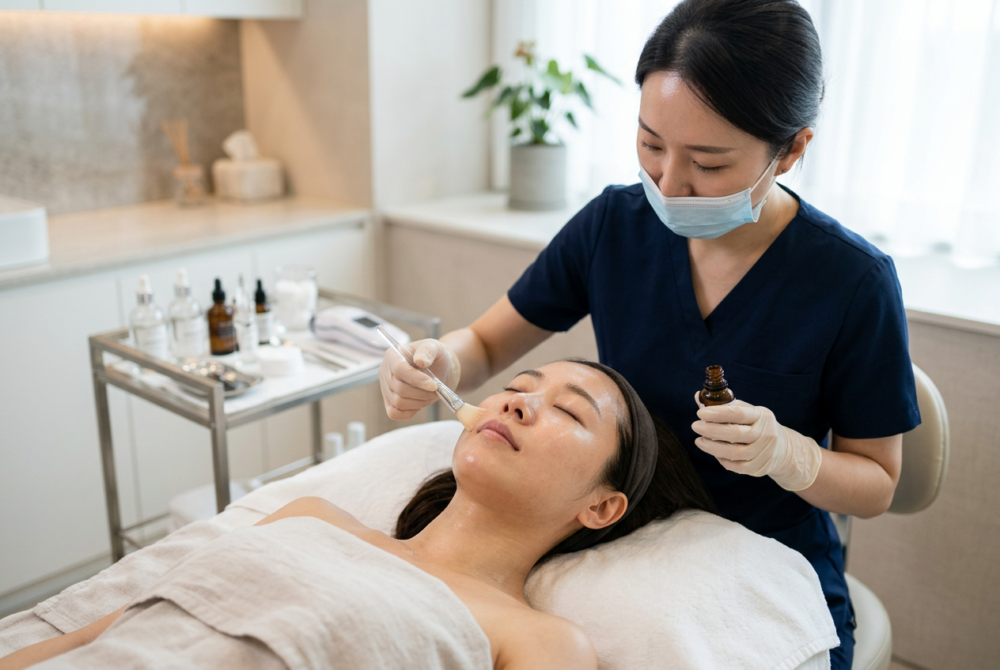
피부 장벽 케어
민감성 피부와 손상된 장벽을 회복하는 저자극 보습·진정 프로그램입니다.
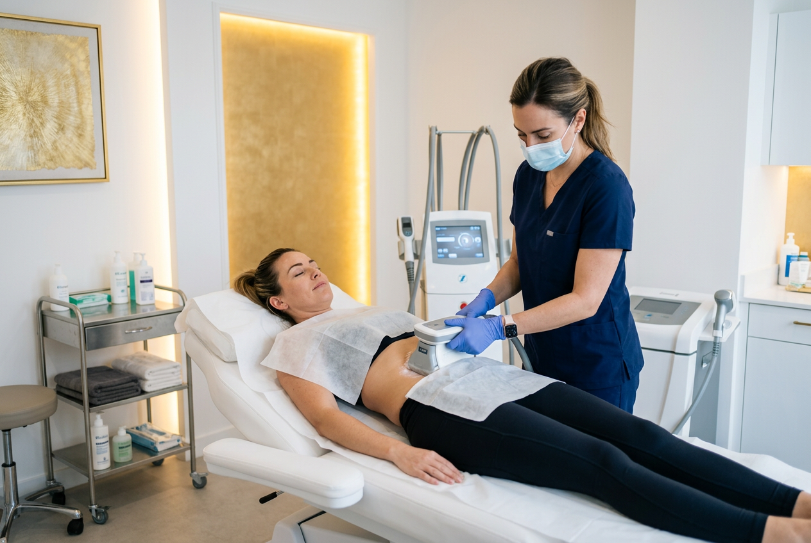
바디 컨투어링
비침습 체형 관리와 셀룰라이트 개선을 위한 최신 바디 프로그램입니다.
첫 방문부터
사후 관리까지
온라인 상담
전화 또는 온라인으로 간편하게
초기 상담을 진행합니다.
AI 피부 분석
첨단 AI 스캐너로 피부 상태를
정밀하게 분석합니다.
맞춤 시술 설계
분석 결과에 따라 개인 맞춤
시술 플랜을 설계합니다.
시술 진행
전문의가 직접 시술을 진행하며
안전을 최우선으로 합니다.
경과 관찰
시술 후 정기적인 경과 관찰과
사후 관리를 제공합니다.
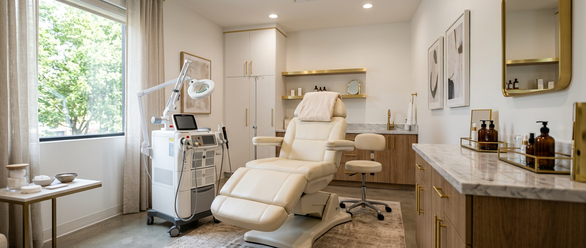
프라이빗한 공간,
안심할 수 있는 환경
화이트 마블 인테리어와 독립 시술실,
최신 장비가 갖춰진 청담동 공간에서 편안한 진료를 경험하세요.
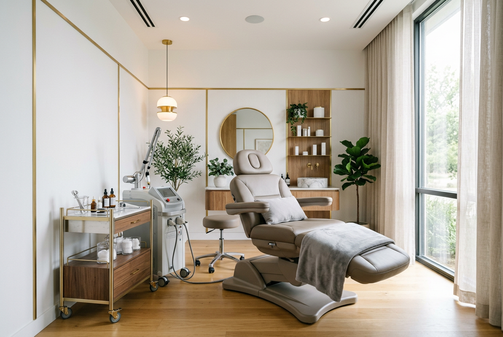
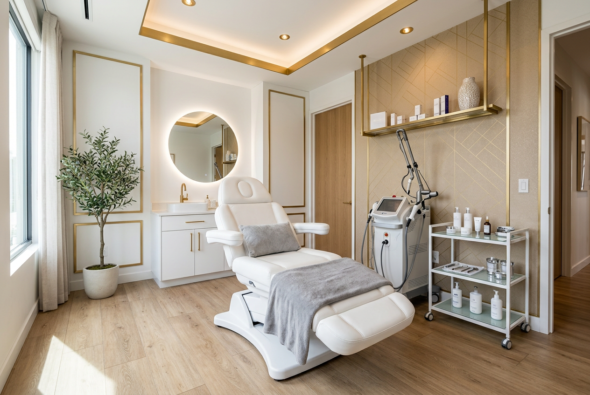
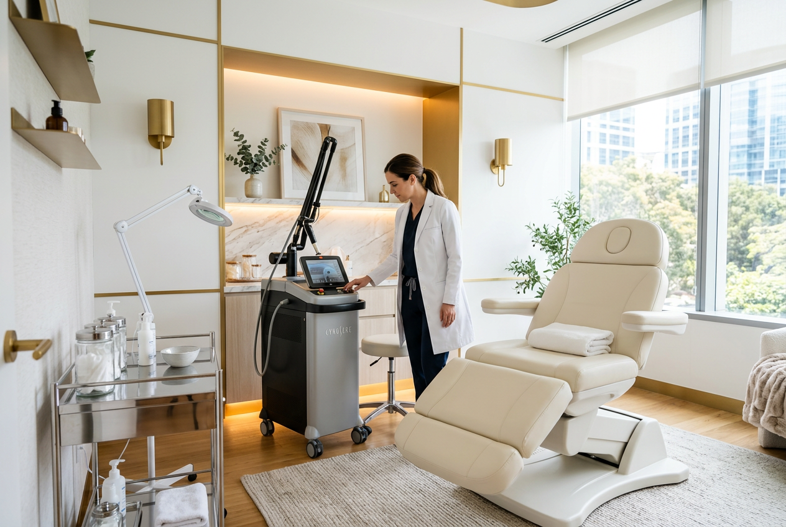
시술 그 이후,
루메르 홈케어
시술 후 피부 회복과 유지를 위한 더모코스메틱 라인. 전문의가 직접 설계했습니다.
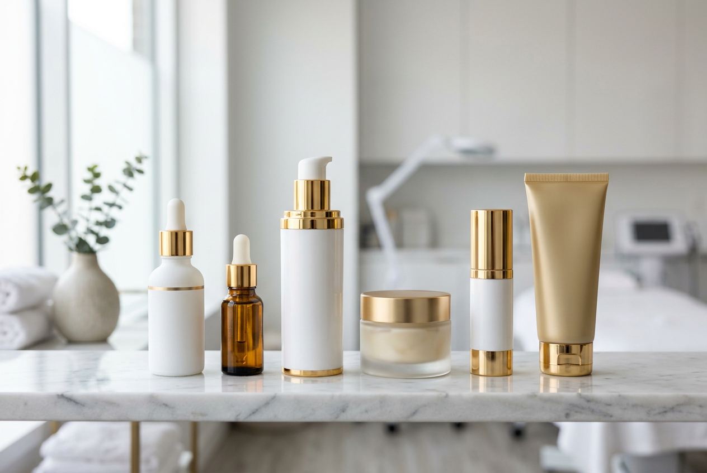
피부과 전문의 설계
15년 임상 경험을 바탕으로 성분과 농도를 직접 설계합니다.
EWG 그린 등급 성분
유해 성분 없이 안전한 원료만 사용합니다.
시술 후 집중 케어
시술 직후부터 사용 가능한 진정·보습 라인입니다.
자주 묻는 질문
시술 종류에 따라 다르지만, 대부분의 레이저 시술은 1~3일 정도의 회복 기간이 필요합니다. 리프팅 시술의 경우 3~7일 정도 약간의 붓기가 있을 수 있으며, 일상생활은 바로 가능합니다.
모든 시술 전 충분한 상담과 피부 분석을 통해 부작용을 최소화합니다. 일시적인 발적이나 붓기는 정상적인 반응이며, 대부분 2~5일 이내에 자연스럽게 가라앉습니다.
네, 3회/5회/10회 패키지 프로그램을 운영하고 있습니다. 시술 횟수가 많을수록 더 큰 할인이 적용되며, 첫 방문 시 상담을 통해 최적의 패키지를 안내해 드립니다.
특별한 준비 없이 방문하셔도 됩니다. 다만 기초 화장 상태에서 방문하시면 정확한 피부 분석에 도움이 됩니다. 현재 복용 중인 약이 있다면 미리 알려주세요.
물론입니다. 시술 없이 상담만 받으실 수 있습니다. AI 피부 분석과 전문의 상담을 통해 현재 피부 상태와 개선 방향을 안내해 드립니다. 상담 비용은 별도로 발생하지 않습니다.
건물 지하 주차장을 이용하실 수 있으며, 시술 고객님께는 2시간 무료 주차를 제공합니다. 발렛파킹 서비스도 가능합니다.
상담 예약
위치
서울 강남구 신사동 545-12
루메르빌딩 3F
전화
02-543-7890
진료 시간
평일 10:00 - 19:00
토요일 10:00 - 15:00
일요일·공휴일 휴진
이메일
consult@lumereclinic.co.kr
전화 또는 카카오톡 상담 가능
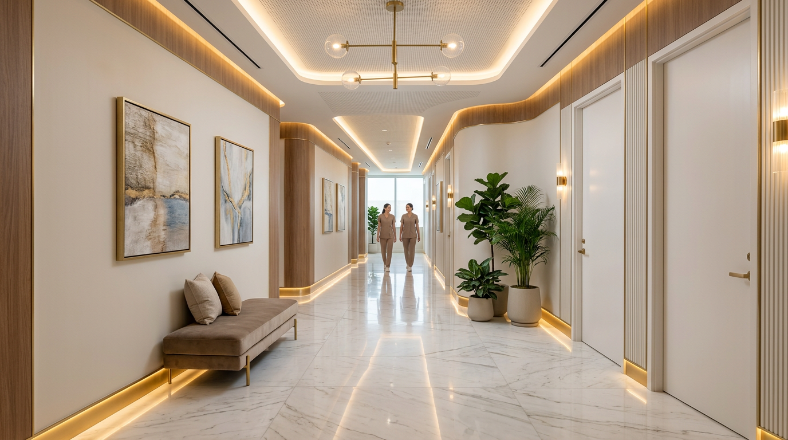